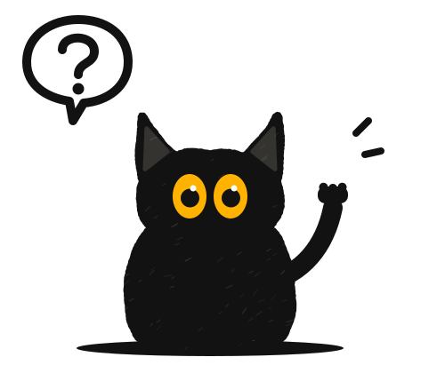
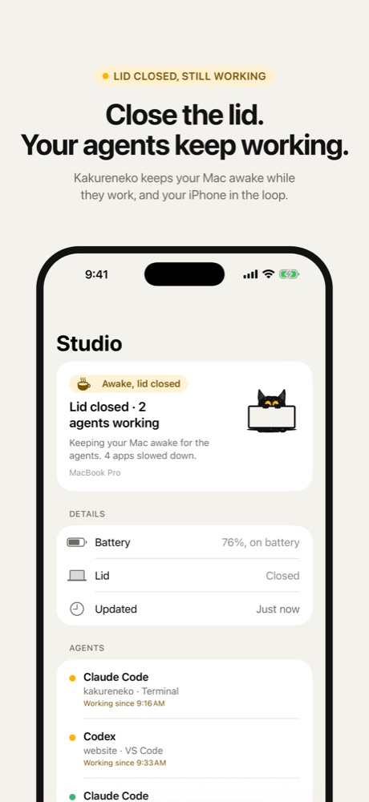
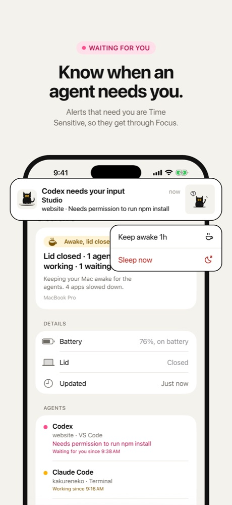
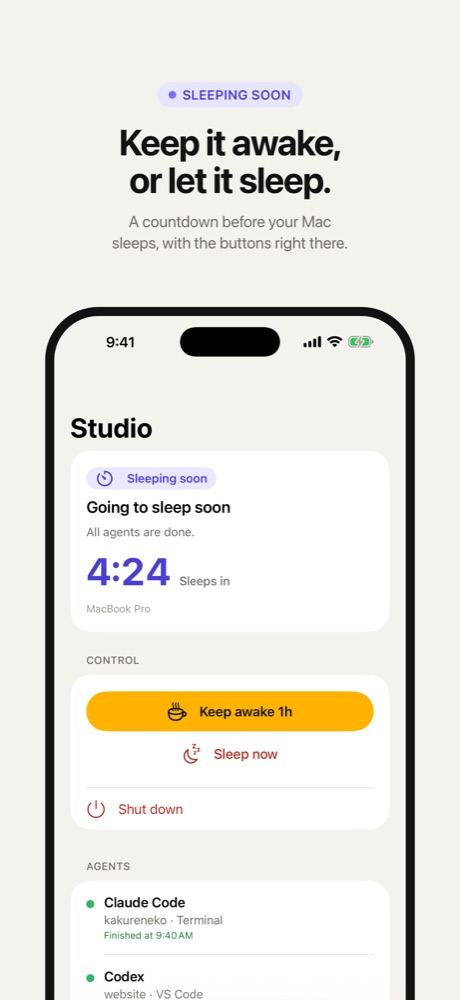
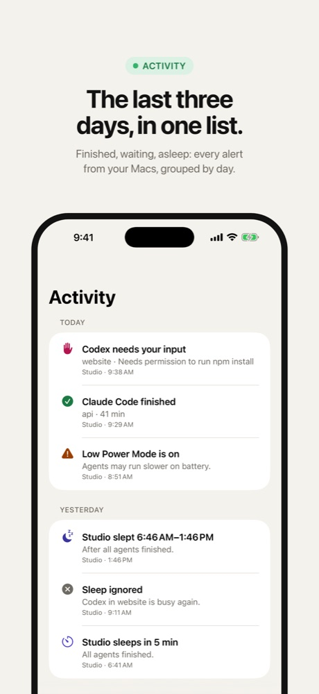
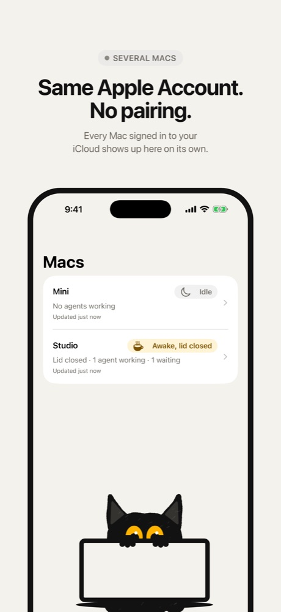
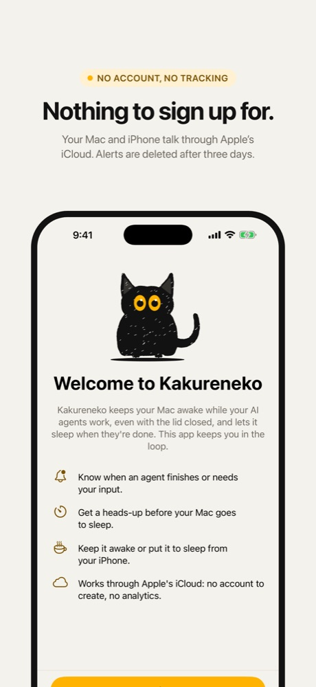

iPhone app
Kakureneko for iPhone
Know when an agent finishes, needs you, or your Mac is about to sleep. Keep it awake or let it sleep, wherever you are.

It needs Kakureneko for Mac. The iPhone app shows the alerts and status that Kakureneko sends from your Mac. Without it, there's nothing to show. Download Kakureneko for Mac.
Screenshots
What you'll see






What it does
Your Mac, from your pocket
Alerts that matter
When an agent finishes, when one needs your input, and before your Mac goes to sleep. The ones that need you are Time Sensitive, so they get through Focus.
Buttons on the alert
Keep awake holds the Mac for an hour, or as long as you set on the Mac. Sleep now puts it to sleep. If you let Kakureneko shut the Mac down, there's a Shut down button too. In the app, Sleep and Shut down ask first.
Your Mac at a glance
What it's doing, each agent session, the battery, the lid, and the countdown to sleep. If the Mac stops answering, the app says so.
The last three days
Every alert from your Macs, grouped by day. Several Macs on one Apple Account show up side by side.
Setup
No pairing, no account
Your Mac and iPhone find each other through iCloud.
-
Install Kakureneko on your Mac
And turn on alerts during its setup. iPhone alerts are on by default.
-
Use the same Apple Account
Sign in to the same Apple Account on the iPhone and the Mac, with iCloud on.
-
Allow notifications
Open the app and allow notifications. Turn on Time Sensitive alerts too.
-
Your Mac appears
As soon as Kakureneko on the Mac shares its status. Send a test alert to check.
By default your iPhone gets alerts while the Mac's lid is closed. You can change that on the Mac, in Settings → Notifications. More in Support.
Privacy
Nothing to sign up for
The app talks to your Mac through Apple's iCloud. Other iCloud users can't read what it sends, and alerts are deleted after three days. No analytics, no tracking, no ads.
Requirements
What you need
- An iPhone
- iOS 18 or later.
- Kakureneko for Mac
- On a Mac with macOS 26 or later. Download it here.
- One Apple Account
- The same one on the iPhone and the Mac, signed in to iCloud.